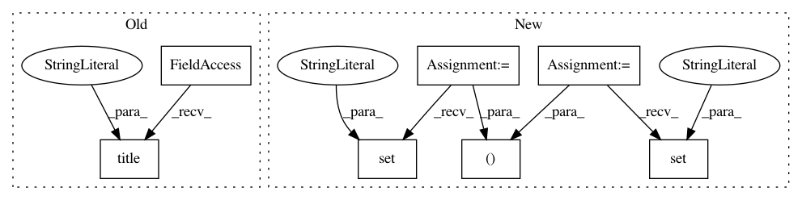

39ca4abed87007e1ce7e2ecae9bfb31c8f4ba57b,examples/subplots_axes_and_figures/subplot_demo.py,,,#,12
Before Change
plt.subplot(2, 1, 1)
plt.plot(x1, y1, "ko-")
plt.title("A tale of 2 subplots")
plt.ylabel("Damped oscillation")
plt.subplot(2, 1, 2)
plt.plot(x2, y2, "r.-")
After Change
y2 = np.cos(2 * np.pi * x2)
// Create two subplots sharing y axis
fig, (ax1, ax2) = plt.subplots(2, sharey=True)
ax1.plot(x1, y1, "ko-")
ax1.set(title="A tale of 2 subplots", ylabel="Damped oscillation")
ax2.plot(x2, y2, "r.-")
ax2.set(xlabel="time (s)", ylabel="Undamped")
plt.show()
In pattern: SUPERPATTERN
Frequency: 4
Non-data size: 7
Instances
Project Name: matplotlib/matplotlib
Commit Name: 39ca4abed87007e1ce7e2ecae9bfb31c8f4ba57b
Time: 2017-07-16
Author: dmgt@users.noreply.github.com
File Name: examples/subplots_axes_and_figures/subplot_demo.py
Class Name:
Method Name:
Project Name: librosa/librosa
Commit Name: 24d6f5e42d775949e191122091826eefa7bf1246
Time: 2020-06-27
Author: bmcfee@users.noreply.github.com
File Name: docs/examples/plot_vocal_separation.py
Class Name:
Method Name:
Project Name: matplotlib/matplotlib
Commit Name: fa23f8814ab9d123d5b98ff9b5723c2f99fdd295
Time: 2019-05-12
Author: anntzer.lee@gmail.com
File Name: examples/misc/contour_manual.py
Class Name:
Method Name:
Project Name: matplotlib/matplotlib
Commit Name: fb022d48bb1194dec44af9bbb7c4fd7f66f27ced
Time: 2017-07-21
Author: dmgt@users.noreply.github.com
File Name: examples/pylab_examples/log_demo.py
Class Name:
Method Name: